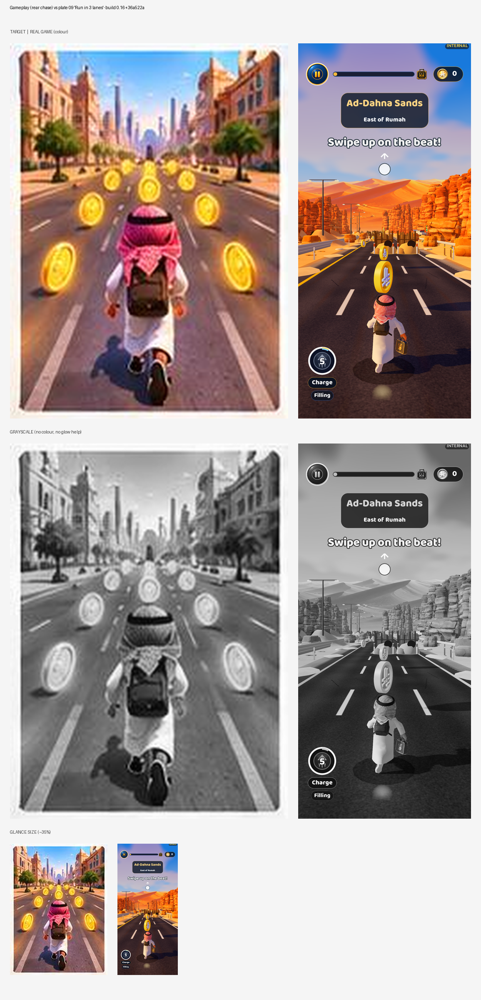
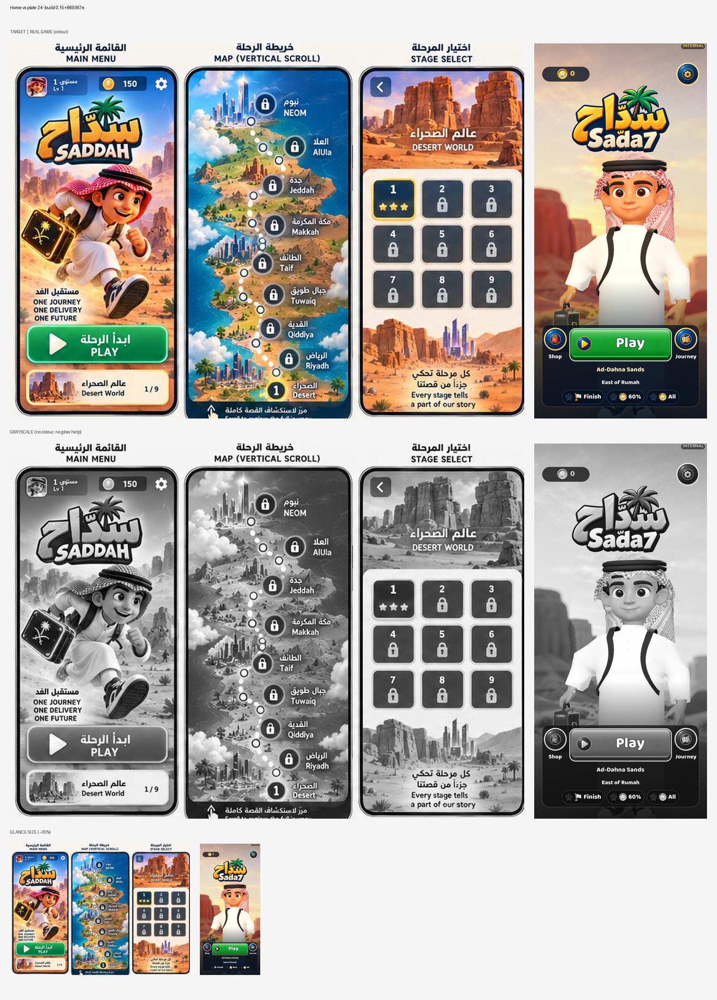
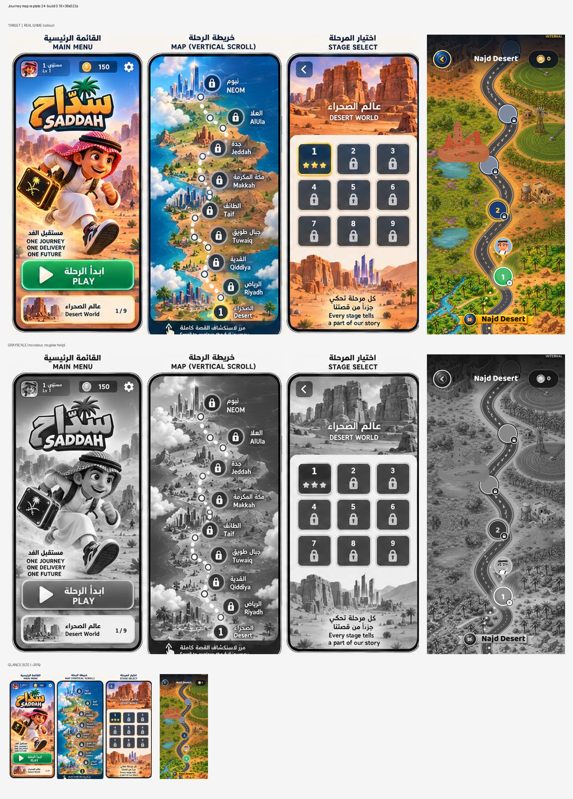
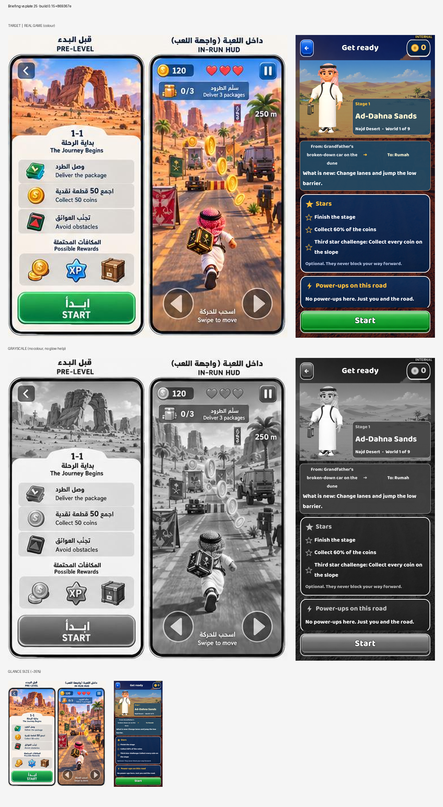
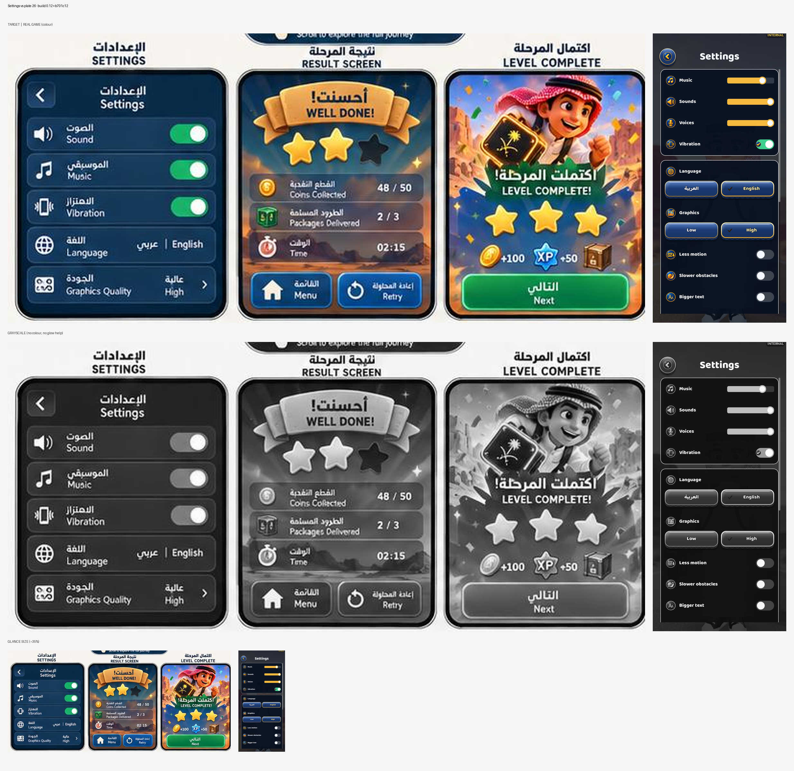
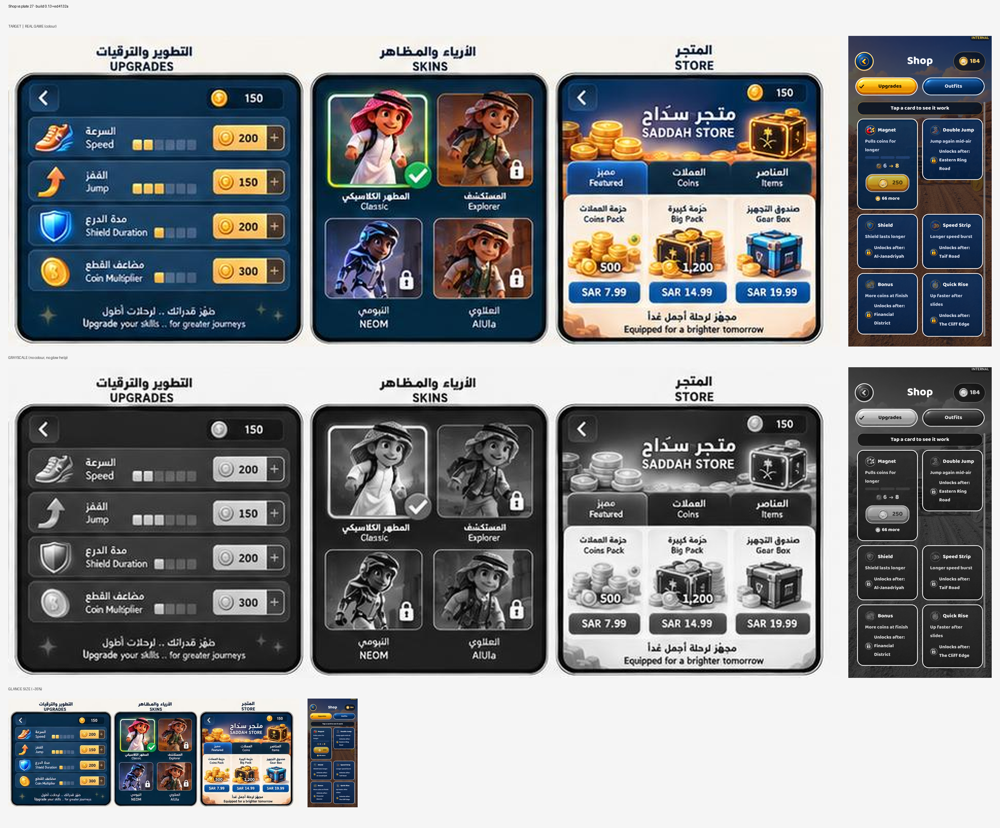

build.json · automated checks for build 0.12+b701c12
Automated: measured from 1 bot run(s) (event logs). Targets: config/build_checks.json feel.runner (event runner_metrics; shooter table skipped). It shows pacing and systems working; it does not show that a person finds it fun.
| Target | Threshold | Passing runs | Unknown | Median |
|---|---|---|---|---|
| finished | = True | 1/1 ✅ | 0 | – |
| hard_hits | ≤ 0 | 1/1 ✅ | 0 | 0 |
| coin_share | ≥ 0.6 | 1/1 ✅ | 0 | 0.8 |
Unknown checks: 0 (none)
| Run | Result | finished | hard_hits | coin_share | Fails | Unknown |
|---|---|---|---|---|---|---|
| W01-L03 | unknown | True | 0 | 0.8 | – | – |
Automated: each capture from this build beside its visual-bible target (sheets below), with measured differences. The numbers flag drift; they don't judge quality. Look at the sheets.
| # | Screen | Lightness (build / target) | Contrast | Colourfulness | Dark share | Highlights | Drift flags | Sheet |
|---|---|---|---|---|---|---|---|---|
| 1 | Gameplay (rear chase) vs plate 09 'Run in 3 lanes' | 46.4 / 56.5 | 25.7 / 23.2 | 26.9 / 25.7 | 0.29 / 0.05 | 0.03 / 0.2 | missing highlights/glow | art_01.png |
| 2 | Home vs plate 24 | 58.0 / 59.5 | 31.1 / 24.9 | 20.7 / 23.8 | 0.2 / 0.06 | 0.34 / 0.25 | – | art_02.png |
| 3 | Journey map vs plate 24 | 47.2 / 59.5 | 17.5 / 24.9 | 39.0 / 23.8 | 0.09 / 0.06 | 0.02 / 0.25 | darker, more saturated, missing highlights/glow | art_03.png |
| 4 | Briefing vs plate 25 | 34.3 / 65.4 | 23.4 / 25.0 | 25.0 / 21.4 | 0.43 / 0.05 | 0.06 / 0.36 | darker, missing highlights/glow | art_04.png |
| 5 | Settings vs plate 26 | 17.2 / 46.1 | 19.4 / 27.6 | 13.0 / 21.5 | 0.72 / 0.15 | 0.02 / 0.17 | darker, missing highlights/glow | art_05.png |
| 6 | Shop vs plate 27 | 25.7 / 47.6 | 18.0 / 31.7 | 20.5 / 17.8 | 0.52 / 0.26 | 0.03 / 0.26 | darker, flatter, missing highlights/glow | art_06.png |
| Screen | Build | Target |
|---|---|---|
| Gameplay (rear chase) vs plate 09 'Run in 3 lanes' | #aeafc9 #2f2026 #442d2d #a64923 #bd8975 #d3bba7 | #946257 #8f524e #b98973 #5e403c #fce8be #c0d3de |
| Home vs plate 24 | #21202a #c5beab #f9efd8 #f2cfa3 #5d634c #ba7458 | #b07657 #464149 #f8f1e7 #417081 #a0aca8 #efb98b |
| Journey map vs plate 24 | #626124 #8f7e2e #383e29 #dca349 #906430 #82984b | #b07657 #464149 #f8f1e7 #417081 #a0aca8 #efb98b |
| Briefing vs plate 25 | #0f284f #708c7c #213250 #43555e #a1bfad #1d1d36 | #f9f5ef #c88661 #614645 #b7c5c5 #6e7f7c #f3cdaa |
| Settings vs plate 26 | #0b1422 #2c3648 #0a1321 #83837b #1c202b #07101f | #0e3250 #417177 #a17c68 #42414d #f8e9d0 #b1baab |
| Shop vs plate 27 | #11294b #32282c #0b2446 #4b4f5b #999795 #313446 | #092a44 #203c59 #85807a #f9f1e3 #53403f #ddd9cc |
Target: every role pair ≥ 25.0.
| Roles | Closest pair ΔE | Result |
|---|---|---|





